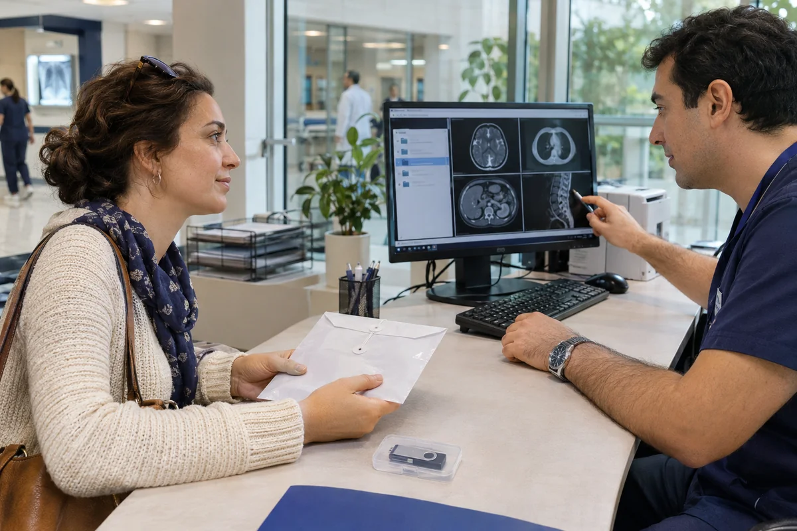

Ask for a usable imaging study
A doctor abroad may ask to see the scan taken before your operation in Türkiye. You open the clinic's message and find a photograph of a computer screen, a short report and an expired download link. The appointment is approaching, but it remains unclear whether the receiving team has the examination it needs. Start by naming the study, identifying the hospital that acquired it and asking which export format the receiving radiology department accepts. This guide explains how to organise that request and check the delivery.
The report, the images and the viewing software serve different purposes. A report records the interpreting clinician's findings. An imaging study contains the image material from the examination. A viewer lets an authorised person open compatible files. DICOM, short for Digital Imaging and Communications in Medicine, is the standard for communicating and managing medical imaging information. Ask for the complete available study in that format where supported, together with its associated report. DICOM standard overview
Your receiving clinician should specify what is needed for the intended review. A panoramic dental image, a magnetic resonance examination and a computed tomography study can involve different practical requirements. A successful download alone does not establish that the clinical question can be answered. Arrange a confirmation from the receiving team before relying on the files for an appointment. If a new health problem requires attention, contact a qualified clinician while the records request proceeds.
Identify the place that acquired the images
Make a short examination list using your appointment emails, discharge summary, payment records and any report already supplied. Record the examination date, hospital name, body area, type of scan and patient reference. Include your name as it appeared at registration, since a passport spelling, changed surname or omitted middle name can make a search harder. Where available, add the accession number printed on the radiology report. Keep this list separate from your account of the treatment outcome.
A cosmetic surgery booking company may have arranged an examination at another institution. Ask the coordinator to identify the actual imaging provider and its records contact. Explain that you need the diagnostic study for continuing care or an independent review. A company receiving the package payment may need to forward the enquiry, while the hospital searches its own archive. Save the forwarding message and the name of the person responsible for replying.
For example, imagine a patient who had a nasal scan at a diagnostic centre on Monday and surgery at a different hospital on Wednesday. The operating hospital's discharge folder may mention the scan without containing its export. Two carefully addressed requests can resolve this more quickly than repeatedly asking the surgeon's personal messaging account for every document. The broader records guide explains how to assemble the rest of the treatment file. Requesting medical records after returning home
State the access request clearly
Article 16 of the Patient Rights Regulation provides for patients to inspect their health records and obtain copies, personally or through an authorised or legal representative. This gives a basis for seeking the examination record. Describe the required format as part of the practical request and ask the institution to explain any technical limitation. The general access provision does not describe a particular hospital's export menu or guarantee that every requested software package will be available. Patient Rights Regulation, Article 16
At a private hospital within the scope of the Private Hospitals Regulation, Article 31 also addresses documents supplied on request without charge, including imaging results paid for by the patient, subject to the stated exception concerning originals in forensic cases. Identify which examination and payment your request concerns. If the hospital proposes an additional charge, ask what it covers and the basis for it before arranging payment. Different facility types and records can require separate assessment. Private Hospitals Regulation, Article 31
A useful request would identify you, the examination and the recipient, then ask for all available image series, the final report and any later addendum. Add that the receiving doctor has requested a DICOM export and ask whether delivery will use a secure link, a patient portal or physical media. Request a written list of anything unavailable. Supply identity documents through the institution's verified channel and ask how a representative should demonstrate authority if someone is collecting the copy for you.
Use e-Nabız when you have access
If you already have an authorised e-Nabız account, check the radiology section using the date and hospital details from your examination list. The Ministry's help page describes access to radiological images and reports through the integrated system. Look for the actual examination entry and its report, then establish whether the sharing or export options meet the receiving hospital's needs. Menu wording and the practical options can vary across interfaces. Follow the current instructions displayed in your own account. Official e-Nabız help
The Ministry's Teleradiology service directs patients whose scan is missing from e-Nabız to the patient rights unit at the hospital where it was taken, asking for transmission to the system. It also gives enabiz@saglik.gov.tr for access problems with images that have already been transmitted. In your enquiry, distinguish an examination that never appears from an entry that appears but will not open. Include the study date and a description of the error through the appropriate support channel. Ministry Teleradiology service
An international visitor who cannot access an account can continue the request directly with the imaging provider. Ask its records office for an alternative delivery method and the identity checks it requires. Avoid waiting indefinitely for a portal login when a separate records request is possible. Give the provider the contact details of the receiving department if direct transfer is proposed, and confirm what authority the hospital needs for that arrangement.
Check the package before your appointment
When the delivery arrives, preserve the original archive, message and download instructions. Create a working copy for opening and sharing. Check the patient name, examination date, institution and body region against your list. Record obvious discrepancies without modifying the original files. If the study belongs to another person, stop sharing it and inform the sender through a verified contact. A spelling difference should be raised with the institution so that the relationship between the registration and your identity can be clarified.
Ask the receiving radiology department whether it can import the examination and locate the expected series. It may need the original directory structure retained, a different transfer method or another export. Describe what you received, including whether it is an archive, disc or portal invitation. Renaming a picture file with a DICOM extension will not recreate missing imaging information. Keep any supplied directory and accompanying files together until the receiving team advises how to handle them.
A concrete completeness check might compare a report mentioning several sequences with a delivery containing only a few selected screenshots. Ask the sender to confirm whether the export contains the complete available examination and whether any series were excluded. This is an administrative question about the package. Interpretation of the images, clinical significance of an absent series and any need for further investigation belong with a qualified clinician.
Resolve expired links and unreadable media
Record the date you received the link, the expiry shown and the error message. Ask for a replacement link with sufficient time for your receiving hospital to retrieve the files. Confirm whether the recipient needs an account or a separate access code. If the download succeeds on your computer but fails at the hospital, ask its imaging staff which transfer route they support. A short description of the failure is more actionable than saying that the entire medical file is missing.
For a physical disc or USB delivery, ask the institution whether it can provide a fresh copy or a secure electronic alternative if the media cannot be read. Keep the envelope and any label identifying the study. Do not run unfamiliar software merely to test a file. The receiving hospital can advise on its accepted import process. If the exported material opens but the report is absent, request the report separately using the examination reference.
For example, a traveller may receive a download on Friday that expires before a Tuesday review. Request renewal immediately, explain the appointment date and ask the receiving department to acknowledge retrieval. Keep the first delivery notice alongside the replacement. This chronology helps show what was supplied and when, particularly if someone later needs to understand why an examination was unavailable during a consultation.
Share the records with the intended reviewer
Confirm the recipient's address using the hospital's or clinician's established contact route. Ask whether it uses an upload portal and whether it needs the associated report translated. Send only the material needed for that review and include a concise index. If a password is required, agree a suitable separate way to communicate it. Review the duration of access when using a time-limited share and retain a note of the recipient and transfer date.
Clinical images can include identifying information within the files as well as in visible labels. Ask the receiving professional before attempting to remove details, since changes could affect the review or the connection to the treatment record. Keep an unchanged source copy. If a lawyer or expert needs an anonymised version, agree who will prepare it and how the original will remain available for checking. This keeps the administrative history understandable.
An accompanying note can state the examination date, reason for referral, operation date and the specific question the clinician has agreed to consider. Distinguish symptoms you recall from findings recorded by a professional. Include earlier relevant imaging only when requested or clearly relevant, with its date identified. The site's expert review guide explains how to frame focused questions and organise supporting documents. Preparing an independent medical review
Give the receiving department an import checklist
Before a scheduled consultation, ask the receiving department which examinations it expects and how it will confirm successful import. Useful questions concern the acquisition date, anatomical region, laterality, modality and number of separate studies. The department may also ask whether the package includes a contrast examination, a particular reconstruction or an earlier comparison. Pass its request to the originating radiology team in the same wording. Leave decisions about the clinical relevance of those components to the professionals handling the review.
For dental treatment, explain whether the appointment concerns a panoramic examination, individual radiographs or a cone beam study, using the descriptions on the original paperwork. A photograph of a printed dental film may have been sufficient for an initial conversation, while a specialist assessing implant placement may request another form of delivery. Ask the specialist to confirm the requirement directly. This prevents the patient from paying for translations or repeat administrative work before knowing what the recipient can use.
Write down practical constraints as well. A hospital might accept uploads only through its own portal, have an attachment size limit or require a referral number before the images can be assigned to a clinician. Clarify whether an appointment secretary, central imaging library or individual consultant should receive the package. Include the patient reference issued by the receiving hospital without replacing the originating institution's identifiers. Both references can help staff connect the imported examination with the correct appointment.
If delivery consists of several compressed parts, ask the sender for a list of the expected filenames and instructions for retrieving the whole package. Compare the download list with what actually arrived. A missing part or interrupted download should be reported with the filename and error. Avoid deleting unfamiliar accompanying files while tidying the folder. Request assistance from the sender or receiving imaging team when the archive cannot be extracted, and retain the unsuccessful copy separately until the problem is understood.
Organise several studies without mixing their history
A patient treated in more than one city may accumulate scans from different stages of care. Create a separate folder for each institution and examination date, while retaining the contents of the original export inside it. Use a simple index identifying the pre-operative examination, a later investigation and any home-country follow-up. Mark an uncertain date as uncertain until the hospital confirms it. Sending a clear chronology helps the reviewer find the correct comparison and reduces confusion between separate treatment episodes.
For example, a person might have an initial facial scan in Antalya, another examination after returning to Manchester and a later specialist assessment elsewhere. The question for the reviewer may concern changes between the two studies. Label each provider, date and accompanying report in the index. Explain whether the Turkish clinic supplied a preliminary or final interpretation and whether a subsequent addendum exists. Preserve different versions with their original timestamps and ask the issuing radiology department to clarify their relationship.
A relative helping with the administration should keep a note of the patient's authority and the actions taken. Agree who will hold the source material, submit the request and receive replies. If the patient changes the intended recipient, tell the sending hospital before another transfer is arranged. Record the cancellation or replacement of an earlier share where possible. These simple arrangements help prevent duplicate enquiries and leave the patient with a comprehensible account of where sensitive records were sent.
An expert preparing a legal opinion may need to establish the provenance of the material. Keep the delivery email, institutional letter, original media label and any written statement about missing images with the index. Describe a renamed working folder as your own organisational choice. If a file has been converted, translated or anonymised, identify that version and retain the source. Ask the expert which version should accompany the opinion and which documents are required to confirm authenticity if the matter proceeds further.
Follow up on a precise missing item
If the response contains only a report, reply with a short comparison between the request and delivery. Identify the images still missing, reference the earlier message and ask which department holds them. If only some examinations arrived, list the absent dates individually. Request an explanation if the institution says that an image cannot be retrieved. Preserve its written answer and avoid filling the gap with assumptions about what the scan would have shown.
Where repeated administrative requests produce no usable response, contact the institution's patient rights unit and ask for a reference number. Provide the original request, proof of identity submission and the specific outstanding item. A Turkish lawyer can then assess the records position and the suitable next route if access remains disputed. Any assessment of treatment responsibility will also require the surrounding clinical evidence and chronology.
Keep a compact transfer log with the date requested, person contacted, package received, recipient confirmation and unresolved problem. Before the review, ask whether the clinician has both the report and the usable examination. After the review, retain the professional's findings with the same study reference. The result is a file that another person can follow without reconstructing a long chain of messages, expired links and miscellaneous attachments.
Discuss your situation
Share a brief outline with our legal team. Please do not send full medical records or identity documents in the initial enquiry.